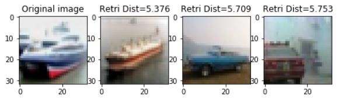
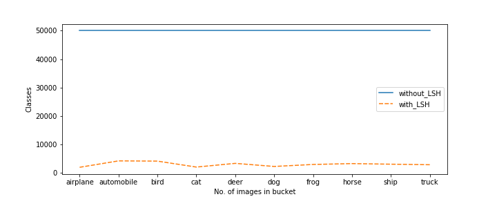
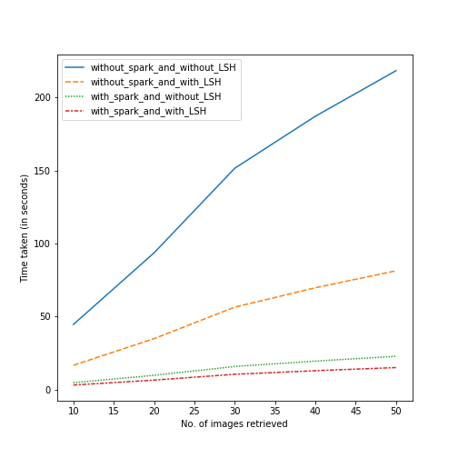
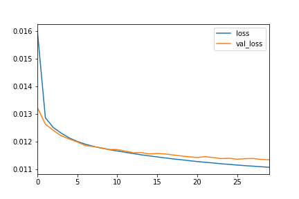
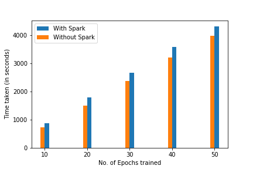

PAPER: Unsupervised CBIR System using deeplearning and Apache Spark
1.1 Introduction
Image retrieval searches and retrieves similar images from a database based on a query image. Text Based Image Retrival (TBIR) and Content Based Image Retrieval (CBIR) are the two ways in which similar images can be retrieved.
CBIR plays a major role in security systems to extract the images with similar features. It finds applications in web search engines, industries and architectural designs to retrieve the relevant image to detect crack and to find the images with same texture patterns. Further, it finds applications in medicine, fingerprint identification, digital libraries, biodiversity information systems, digital libraries, crime prevention and historical research.
Currently, the amount of digital images grows exponentially due to the increase of online users in the Internet. Considering this, distributed CBIR system has been developed using Hadoop & Map Reduce. The recent research of CBIR is shifted to the use of deep neural networks to extract the features. These works have shown good results on many datasets and outperformed handcrafted features subject to the condition of fine tuning of the deep neural network. CBIR has two parts namely, feature extraction and finding similar images using a suitable distance measure. In the context of feature extraction, if the dataset is labeled, a supervised deep learning neural network can be better used to extract the features. However, if the dataset is large in size and unlabeled, annotation of these images will be time consuming in order to extract the features. In the context of finding similar images, the traditional CBIR system compares the feature vector of the query image with the corresponding feature vector of each and every image in the database. This increases the query response time if the dataset is large in size. Hence, it is necessary to improve the CBIR system with respect to query response time for large dataset. Thus, the objective of this paper is to propose Scalable CBIR system to handle large dataset with improved query response time.

2.1 Proposed Model
2.1.1 Building of Denoising Auto-Encoder
The proposed Scalable CBIR (S-CBIR) system consists of three processes namely, feature extraction, bucketi- zation of features and finding similar images as shown Figure 2. First, S-CBIR builds the denoising autoencoder model using Apache Spark with the a set of training images from the database. Further, this model has been utilized to learn the feature vectors for the training set. These feature vectors will be huge, if the data is more. Hence, Locality Sensitive Hash (LSH) algorithm has been used to group the feature vectors of nearly similar images into a set of buckets. When query image is given to S-CBIR, its feature vector will be found. Further, the mapping bucket corresponds to the feature vector will be retrieved. Subsequently, K Nearest Neighbor (KNN) algorithm has been applied for the feature vectors in the retrieved bucket to find the ‘k’ similar images. However, when there are more nodes in the hidden layer than there are inputs, the network has the risk of learning. Denoising Autoencoders solve this problem by corrupting the data on purpose by randomly turning some of the input values to zero. Denoising refers to intentionally adding noise to the raw input before providing it to the network. It creates a corrupted copy of the input by introducing some noise. This helps to avoid the autoencoders to copy the input to the output without learning features about the data. Now the autoencoder has to remove the corruption to generate an output that is similar to the input. Output is compared with input and not with noised input. To minimize the loss function the process has to continue until the convergence. Hence, CBIR utilizes the Denoising auto encoder to extract the features
2.1.1.1 Feature Extraction
The S-CBIR system chooses to utilize deep learning architecture to extract the features from the image as it outperforms the hand crafted feature extraction methods. Though Convolutional Neural Network (CNN) can 13 be used to extract the features from the image, it requires labeled data to train the neural network. However,S-CBIR utilizes big data. As labeling task is costly and time consuming for big data, unsupervised deep learning algorithm, namely, the auto encoder is utilized in this implementation to extract features. Basically, autoencoder encodes the input value x using a function f. Further, it decodes the encoded value f(x) using a function g to create output value identical to the input value. In this context, the objective of the autoencoder is to minimize the reconstruction error between the input and the output. This helps autoencoders to learn important features present in the data. Auto encoder preserves most of the information present in the input when a representation allows a good reconstruction of its input.However, when there are more nodes in the hidden layer than there are inputs, the network has the risk of learning. Denoising Autoencoders solve this problem by corrupting the data on purpose by randomly turning some of the input values to zero. Denoising refers to intentionally adding noise to the raw input before providing it to the network. It creates a corrupted copy of the input by introducing some noise. This helps to avoid the autoencoders to copy the input to the output without learning features about the data. Now the autoencoder has to remove the corruption to generate an output that is similar to the input. Output is compared with input and not with noised input. To minimize the loss function the process has to continue until the convergence. Hence, CBIR utilizes the Denoising auto encoder to extract the features.
2.1.2 Locality Sensitive Hashing: Using Random projection method
Random projection is a technique for representing high-dimensional data in low-dimensional feature space (dimensionality reduction). It gained traction for its ability to approximately preserve relations (pairwise distance or cosine similarity) in low-dimensional space while being computationally less expensive. The core idea behind random projection is that if points in a vector space are of sufficiently high dimension, then they may be projected into a suitable lower-dimensional space in a way which approximately preserves the distances between the points. Consider a high-dimensional data represented as a matrix D, with n observations (columns of matrix) and d features (rows of the matrix). It can be projected onto a lower dimensional space with k dimensions using a random projection matrix R. Mathematically, the lower dimensional representation P can be obtained as:2.1.2.1 Basic algorithm to generate a bitwise hash table:
1. Create k random vectors of length d each, where k is the size of bitwise hash value and d is the dimension of the feature vector.
2. For each random vector, compute the dot product of the random vector and the observation. If the result of the dot product is positive, assign the bit value as 1 else 0
3. Concatenate all the bit values computed for k dot products
4. Repeat the above two steps for all observations to compute hash values for all observations
5. Group observations with same hash values together to create a LSH table
2.1.3 K-Nearest Neighbours
KNN is a model that classifies data points based on the points that are most similar to it. It uses test data to make an “educated guess” on what an unclassified point should be classified as.KNN is an algorithm that is considered both non-parametric and an example of lazy learning. Non-parametric means that it makes no assumptions. The model is made up entirely from the data given to it rather than assuming its structure is normal. Lazy learning means that the algorithm makes no generalizations. This means that there is little training involved when using this method. Because of this, all of the training data is also used in testing when using KNN.Pros:
1.Easy to use.
2.Quick calculation time.
3.Does not make assumptions about the data.
Cons:
4.Accuracy depends on the quality of the data.
5.Must find an optimal k value (number of nearest neighbors).
6.Poor at classifying data points in a boundary where they can be classified one way or another.

Proof of concept:
- 
- 
- 
- 